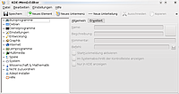
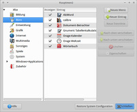

Menüeditor
Dieser Artikel wurde für die folgenden Ubuntu-Versionen getestet:
Dieser Artikel ist größtenteils für alle Ubuntu-Versionen gültig.
Normalerweise werden Menüeinträge für Programme bei der Installation automatisch angelegt. Nur selten müssen Menüeinträge manuell erstellt oder bearbeitet werden. Dies ist z.B. dann der Fall, wenn man Programme von Hand installiert hat. Jede Desktopumgebung behandelt Menüeinträge dabei auf andere Art und Weise. Für manche Desktop-Umgebungen existieren daher Menüeditoren, mit denen man die Menüs individuell anpassen kann.
Desktop-Umgebungen¶
Unity¶
Unity kennt keine klassische Menüstruktur im Sinne von Ausklappmenüs und ähnlichem. Alle Programme können über das Schnellstartmenü aufgerufen werden. Es ist jedoch möglich, Programme in der Leiste am linken Fensterrand abzulegen, um diese dort per Mausklick zu starten. Wie das funktioniert, wird im Artikel Unity Startmenü beschrieben. Möchte man dennoch Starter erstellen oder bearbeiten, kann dies Desktop-unabhängig erfolgen.
Mit dem Zusatzprogramm Arronax lassen sich außerdem Programmstarter bequem auf dem Desktop erstellen (siehe auch Desktop-Symbole).
GNOME Shell¶
Die GNOME Shell hat ein modernes Bedienkonzept. Ein klassisches Menü existiert nicht (kann aber über eine Erweiterung eingestellt werden) und es ist kein Menüeditor vorinstalliert. Dennoch ist zum Bearbeiten und Anlegen der Starter ein Menüeditor hilfreich. Dafür kommen die Desktop-unabhängigen Varianten in Frage oder das eigens für Gnome entwickelte Alacarte, das über folgendes Paket installiert werden kann:
alacarte (universe)
 mit apturl
mit apturl
Paketliste zum Kopieren:
sudo apt-get install alacarte
sudo aptitude install alacarte
|  |
| KDE Menü-Editor |
KDE¶
Ein Rechtsklick  auf das K-Menü gibt einem die Möglichkeit den "Menü-Editor" zu starten. Möglicherweise muss man davor aber die Fixierung der Kontrollleiste aufheben. Dies kann man nach einem Rechtsklick auf eine freie Stelle der Kontrollleiste machen.
auf das K-Menü gibt einem die Möglichkeit den "Menü-Editor" zu starten. Möglicherweise muss man davor aber die Fixierung der Kontrollleiste aufheben. Dies kann man nach einem Rechtsklick auf eine freie Stelle der Kontrollleiste machen.
Im Menü-Editor kann man ebenfalls umfangreich alle Einträge im K-Menü, also im Startmenü von KDE, bearbeiten, neu erstellen oder natürlich auch löschen. Diese Einstellungen gelten immer nur für den gerade angemeldeten Benutzer.
MATE¶
Die Weiterentwicklung des Menüeditors alacarte von GNOME 2 für MATE hört inzwischen auf den Namen Mozo. Die Bedienung hat sich dagegen nicht geändert.
LXDE¶
Auch die Desktop-Umgebung LXDE enthält wie Xfce keinen eigenen Menüeditor, jedoch ist LXShortcut installierbar. Mit lxmed  ist ein weiteres (ausschliesslich englischsprachiges) Programm auf Java-Basis verfügbar. Es stammt nicht aus den offiziellen Paketquellen und muss manuell installiert werden.
ist ein weiteres (ausschliesslich englischsprachiges) Programm auf Java-Basis verfügbar. Es stammt nicht aus den offiziellen Paketquellen und muss manuell installiert werden.
Hinweis!
Fremdsoftware kann das System gefährden.
|  |
| Alacarte unter Xfce |
Xfce¶
Seit Xubuntu 14.04 dient MenuLibre als Ersatz für Alacarte. Alternativ kann man lxmed (siehe LXDE) verwenden.
Desktop-Unabhängig¶
Es gibt Varianten zur Menübearbeitung, die unabhängig von der eingesetzten Desktop-Umgebung sind.
Menu Libre¶
MenuLibre hat eine einfach zu bedienende Benutzeroberfläche und bietet einige Konfigurationsmöglichkeiten.
Editor¶
Es besteht auch die Möglichkeit, Programmstarter mit Hilfe eines Texteditors zu bearbeiten. Die genaue Vorgehensweise wird im Artikel .desktop-Dateien erklärt. Zusätzlich kann man mit Hilfe von .directory-Dateien auch neue Untermenüs erstellen.
 Übersichtsartikel
Übersichtsartikel- Erstellt mit Inyoka
-
 2004 – 2017 ubuntuusers.de • Einige Rechte vorbehalten
2004 – 2017 ubuntuusers.de • Einige Rechte vorbehalten
Lizenz • Kontakt • Datenschutz • Impressum • Serverstatus -
Serverhousing gespendet von